Second Month SEO Progress Report
What changed in July, what was completed, what remains underway, and the priorities for August.
Executive Summary
July moved LifeUSA from planning into visible delivery. New orphan-support content went live, the organization’s digital identity was strengthened, and Google showed LifeUSA pages 58.3% more often than in June.
Articles Published or Rewritten
5 Three new publications and two existing-page rewrites reached the live site.Infographics Published
18 Verified on four LifeUSA orphan-support articles.More Google Visibility
+58.3% July impressions compared with the full calendar month of June.Brand and Identity Actions
8 Completed across LifeUSA’s owned website and brand settings.Only work completed or newly advanced during July is counted here. June deliverables are not counted again.
Search Momentum
Google Search Console data for July 1 to July 31, 2026, shows a much larger search footprint in the first month of publishing.
Clicks
723 Visits from Google Search during July.Impressions
123,552 Times Google showed LifeUSA results.Click Rate
0.59% The share of impressions that became clicks.Avg. Position
10.0 Average Google result position.Evidence of Search Growth
{kind=link}
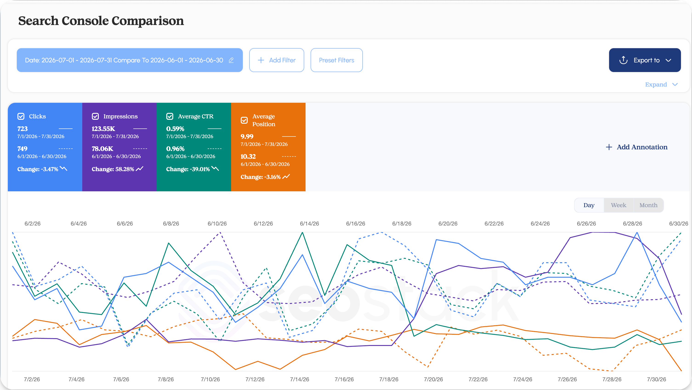
{kind=link}
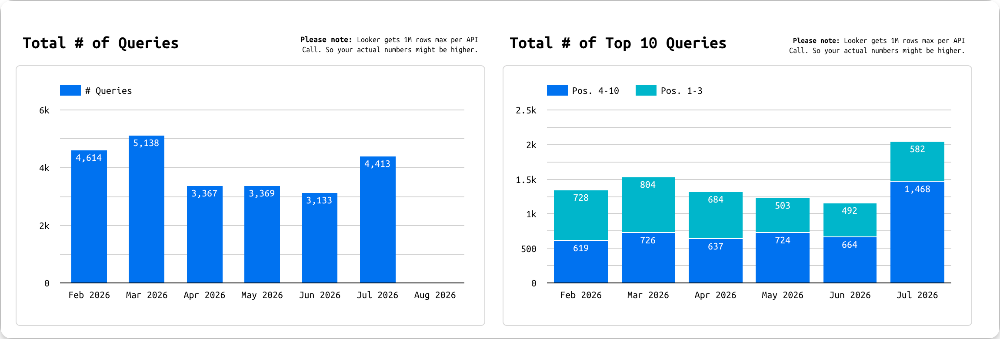
{kind=link}
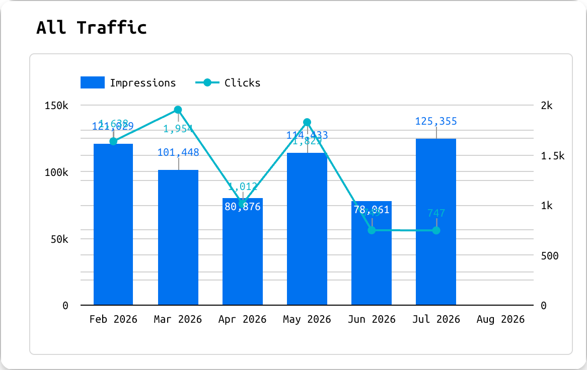
{kind=link}
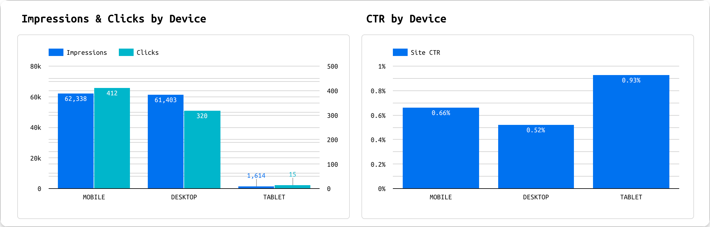
Pages Creating the Most Search Activity
| Top page during July | Clicks | Impressions | Click rate | Avg. position |
|---|---|---|---|---|
| Homepage | 254 | 11,754 | 2.16% | 9.6 |
| Why Giving Makes You Wealthier | 104 | 7,953 | 1.31% | 8.1 |
| Earthquake article | 77 | 9,638 | 0.80% | 13.8 |
| HTTP homepage variant | 58 | 2,084 | 2.78% | 5.6 |
| What Is an Orphan? | 35 | 62,760 | 0.06% | 8.5 |
| Gaza orphans article | 22 | 1,735 | 1.27% | 11.5 |
Supporting Authority Growth (Ahrefs Estimates)
| Estimated indicator | June 30 | July 31 | Change |
|---|---|---|---|
| Live backlinks | 8,732 | 9,180 | +448, or 5.1% |
| Live referring domains | 1,328 | 1,499 | +171, or 12.9% |
| Estimated US organic traffic | 599 | 626 | +27, or 4.5% |
| US organic keywords | 121 | 122 | +1, or 0.8% |
| US top-three keywords | 45 | 43 | -2, or -4.4% |
Search Console provides the headline monthly results. Ahrefs and the Looker panels provide supporting context and are not combined with those totals.
What July Delivered
July produced four clear outcomes: eight owned-site brand and identity actions, three aligned public profiles, five live article outcomes, and 18 published infographics.
Results at a Glance
8 brand and identity actions completed
The approved logo is now used in the Wix Business Profile, Brand Resources page, homepage header, footer, and favicon. The homepage organization data, main heading, and Brand Resources navigation were also corrected.
3 public profiles aligned
The approved LifeUSA logo and website were verified on Find Us Here, A-Z Business Finder, and Nextdoor.
5 article outcomes went live
Three new guides were published and two existing articles were fully rewritten, including the orphan sponsorship guide, the updated Gaza orphans article, and Why One Gift Means the World.
18 infographics were published
Visuals are now live across four articles, including five on What Is an Orphan? and five on the orphan sponsorship guide.
Proof of Technical Progress
Select any image to open the full-resolution evidence. Green marks completed work; gold marks work that continues.
{kind=link}
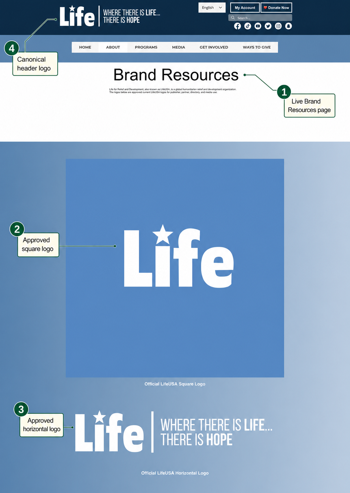
{kind=link}
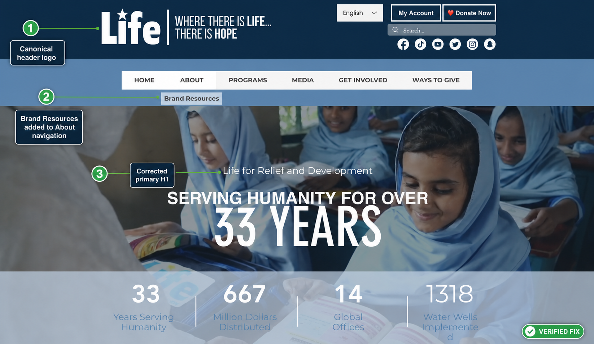
{kind=link}
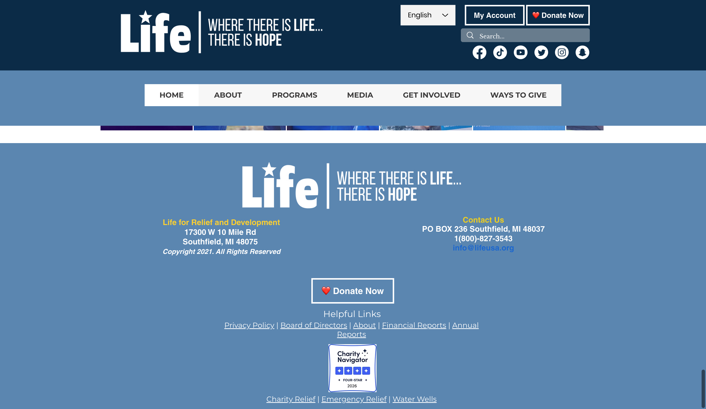
Canonical footer logo{kind=link}
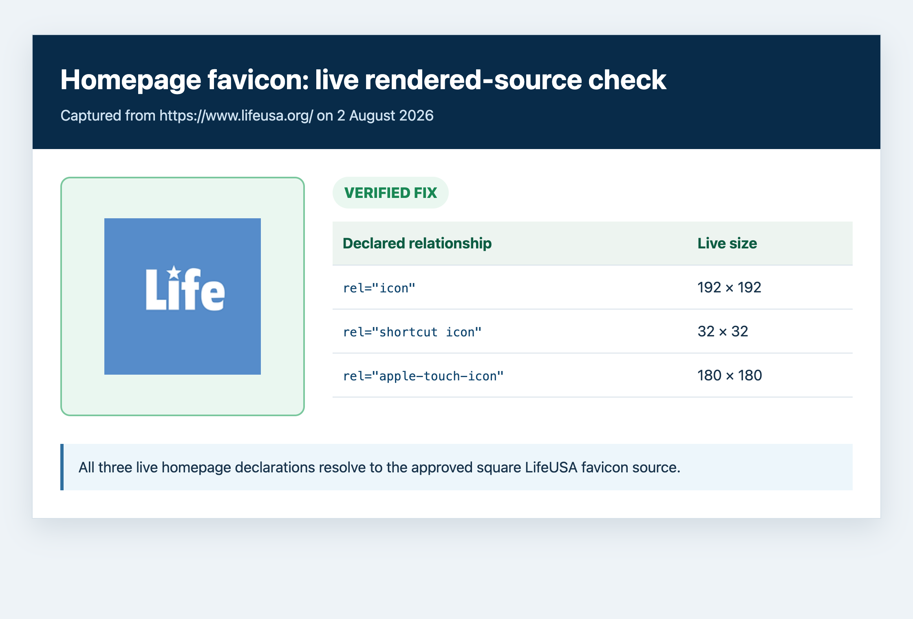
 Logo and identity
Logo and identity Logo and website
Logo and website{kind=link}
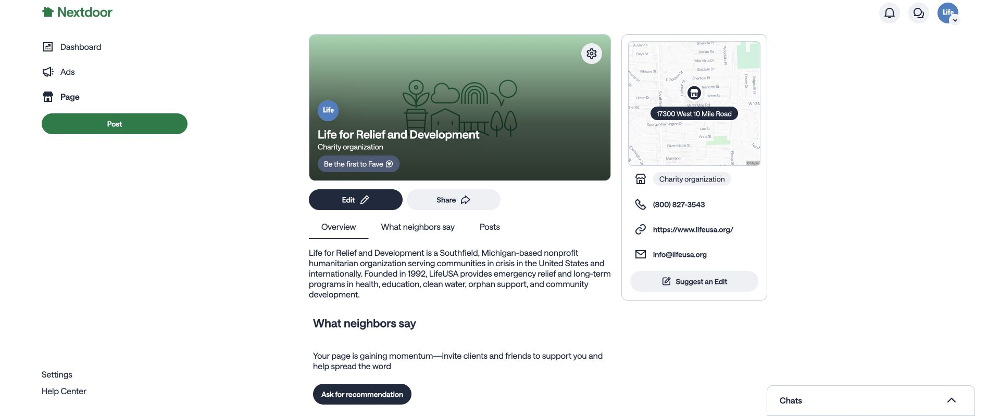
Approved logo and link{kind=link}
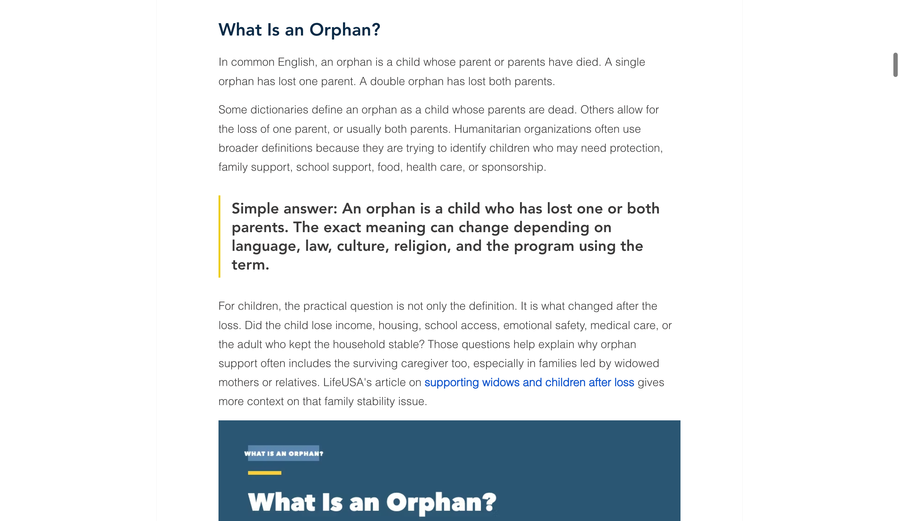
H2, link, and spacingProof of Published Content
{kind=link}
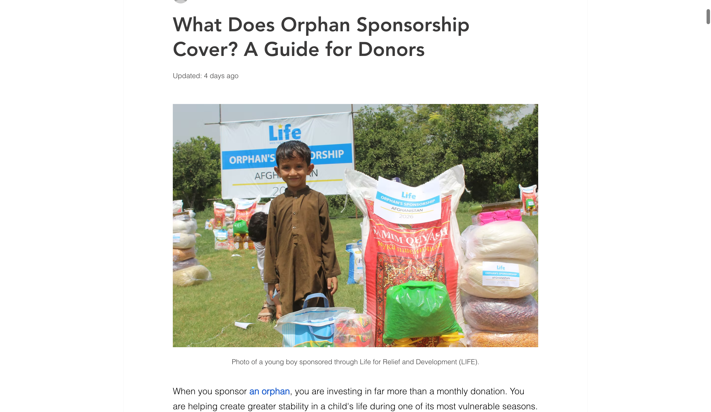
{kind=link}
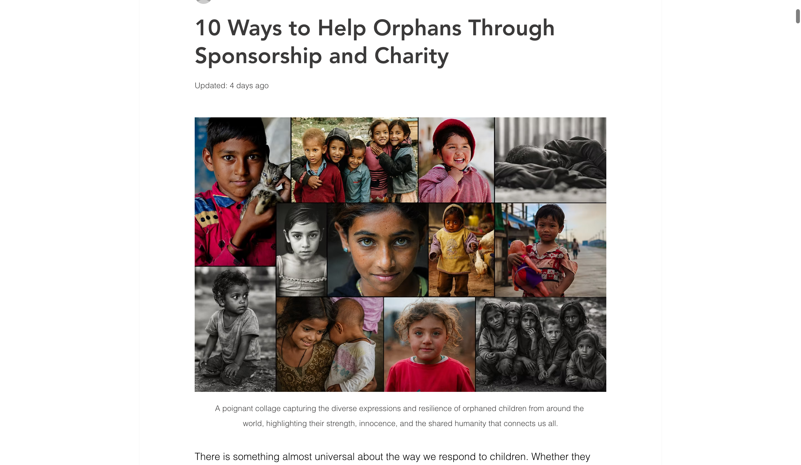
{kind=link}
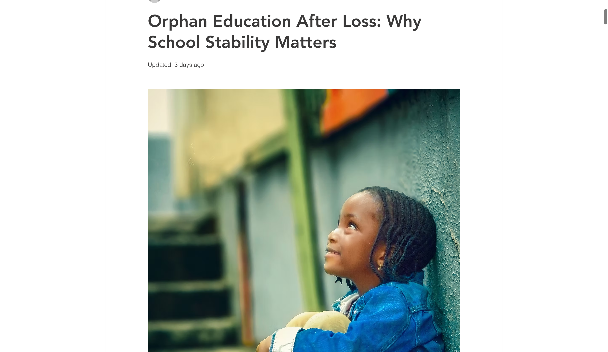
{kind=link}
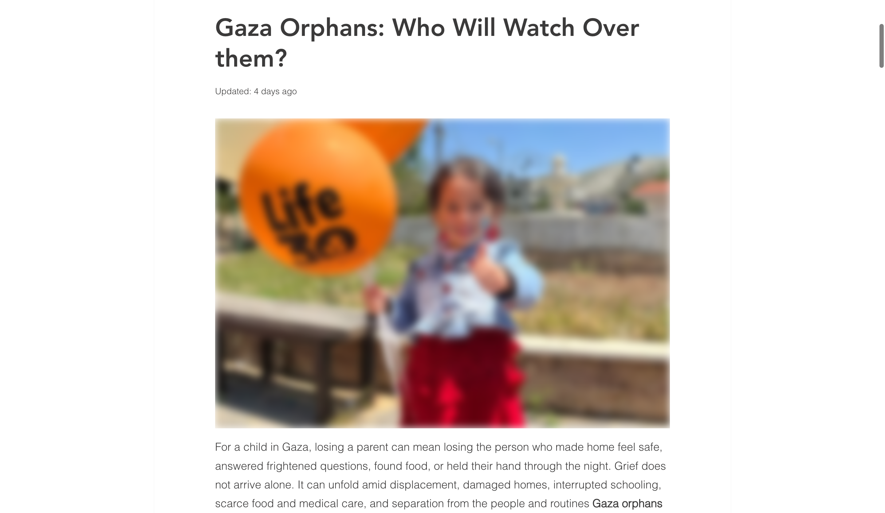
{kind=link}
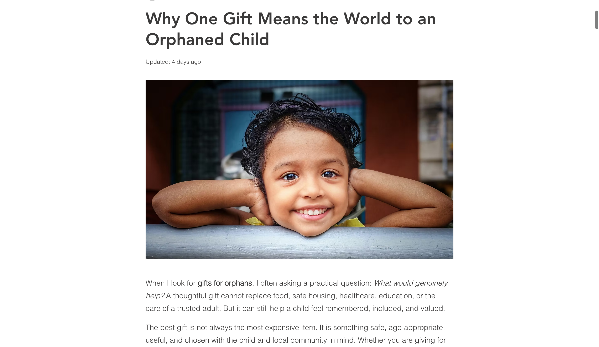
Work Still Underway
July closed important parts of each workstream. The remaining items are active work for the next phase, not abandoned issues.
| Workstream | Completed in July | What continues |
|---|---|---|
| Logo and brand visibility | Eight owned-site actions and three public profile updates were completed. | Query-by-query Google result cleanup and remaining external profile work continue, with each result tracked separately. |
| Website identity and mobile experience | The homepage organization identity was repaired, and the remaining mobile issue was documented for development. | Consolidate the duplicate website identity entry and complete the mobile layout correction with LifeUSA’s developer. |
| Search conversion | LifeUSA gained 58.3% more impressions and improved its average position. | Refine titles, descriptions, and page messaging so the larger search footprint produces more visits. |
| Content completion | Five article outcomes and 18 infographics reached the live site. | The orphan cluster is in close-out. Finish the remaining verification and graphics during the first two to three days of August. |
| Measurement and campaign routes | Search Console reporting is verified and the Donor Portal limitation is documented. | Confirm Analytics and Tag Manager ownership, then strengthen controllable LifeUSA pages and routes around the portal. |
Evidence of Work in Progress
{kind=link}
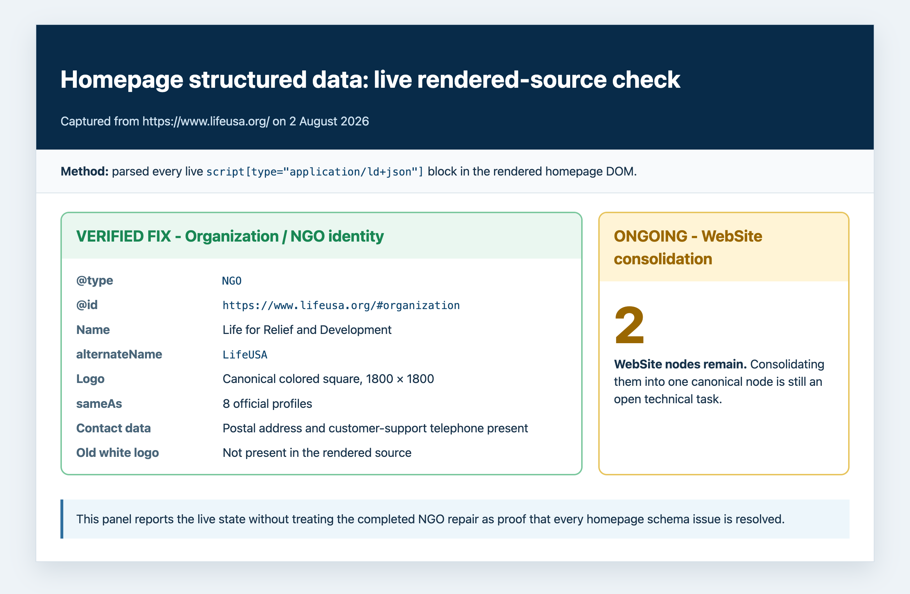
{kind=link}
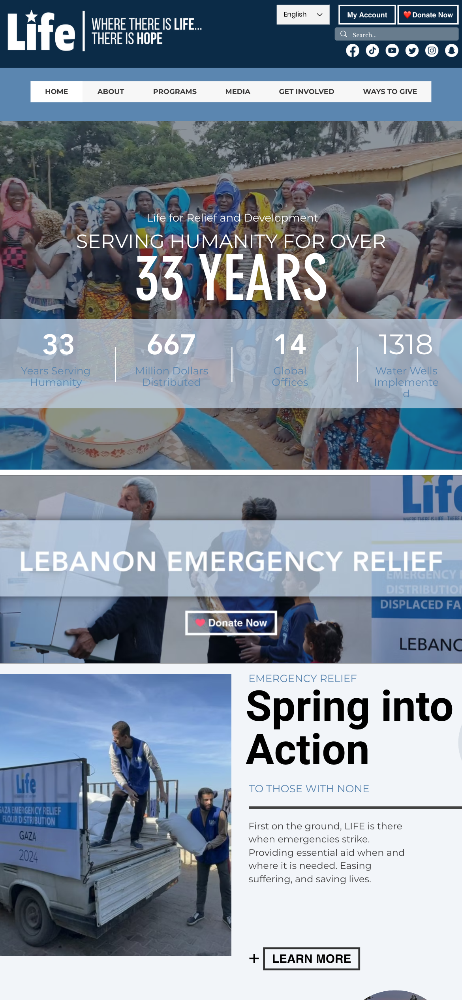
Development in progressAugust Priorities
August priorities follow the live campaign request, technical dependencies, brand cleanup, and the broader article pipeline. The orphan cluster is nearly closed and is listed last.
Build the “60,000 Orphans in Gaza” landing page
Plan the keyword set and page structure around the new Gaza orphans song and video campaign, then prepare the landing-page copywriting handoff. The video had approximately 240,000 views when this request was made.
Close the remaining technical fixes
Complete the mobile layout correction and consolidate the duplicate website identity entry, then verify both changes on the live site.
Continue Google logo-result cleanup
Track each exact query separately and continue external-source and profile corrections until the remaining outdated results change.
Advance the broader LifeUSA article pipeline
Continue approved charitable-giving, Arabic-language, and other account-relevant article work instead of treating the orphan cluster as the only content goal.
Confirm measurement ownership
Confirm the active Analytics property, Tag Manager container, accountable owner, and reporting path before adding measurement claims.
Close out the orphan-content work
Finish the remaining orphan-cluster verification and graphics in the first two to three days of August, then move the workstream out of the active priority list.
Source Notes
Sources used to verify the July report.
- Google Search Console: sc-domain:lifeusa.org performance for July 1 to July 31 and the matched June 1 to June 30 comparison, retrieved August 1, 2026.
- Search evidence captures: The matched-month Search Console comparison and supplemental Looker query, traffic-trend, and device panels were captured August 2, 2026. Looker panels provide context but do not replace the headline Search Console totals.
- Ahrefs: June 30 and July 31 snapshots for estimated backlinks, referring domains, US organic traffic, and keyword distribution.
- Wix publication records and public pages: Current publication state, article updates, rich-content assets, and public rendering checked August 1, 2026.
- June report: First Month SEO Progress Report, used to prevent duplicate credit and preserve the established layout.
- Article planning library: LifeUSA Article Plans and Outlines, used as prior-period and workflow context, not a new July deliverable.
- Owned brand and identity signals: The public homepage, direct canonical logo files, and Brand Resources page were checked for organization data, logo source identity, header, footer, favicon, alt text, H1, and navigation state during July 20 to July 26.
- Retired-logo program: Google Logo Replacement Status and the three linked public profiles.
- Mobile viewport issue: LifeUSA Wix Mobile Viewport Development Ticket.
- Worklog and communication: July engagement history, client email state, writer handoffs, decisions, and unresolved ownership items reviewed through July 31.